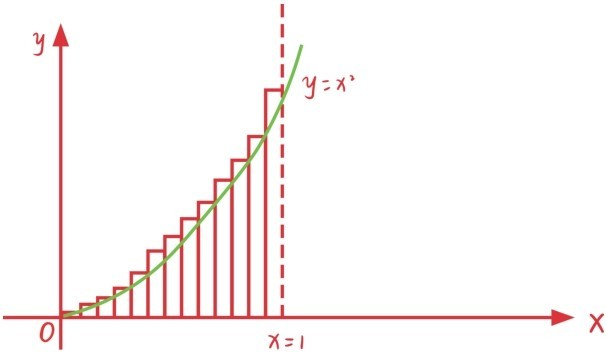
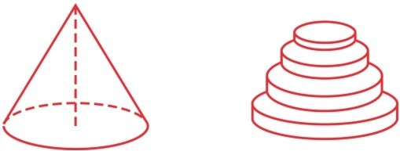
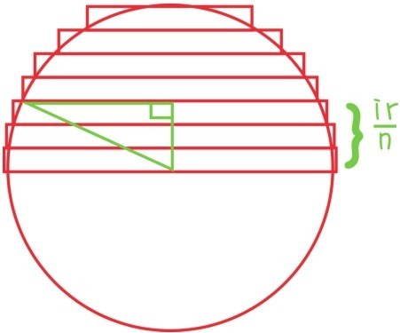

在上一节中提到，等差数列求和公式与梯形面积公式不论是推导过程还是结论都可以很好地做类比。接下来继续探究求和与求面积的类比，出发点是平方数列求和公式
与这个求和公式相关联的求面积问题是什么呢？正是函数y=x2的图形和x轴，以及直线x=1围成的曲边三角形面积问题。

如果将x轴从0到1的线段n等分，就可以用n个宽为，长分别为，…，的长方形的面积之和逼近曲边三角形n的面积。根据平方数列求和公式，这n个长方形的面积之和为
当n不断变大时，这n个长方形的面积之和也越无限逼近曲边三角形的面积，而和也越无限逼近1，所以曲边三角形面积等于 。
完全同样的方法还可以求出底面半径为r，高为h的圆锥的体积，将圆锥的高n等分之后，就可以用n个高为，底面半径分别为的圆柱体积之和逼近圆锥的体积。

根据圆柱体积公式和平方数列求和公式，这n个圆柱体积之和等于
当n不断变大时，就得到圆锥的体积公式
这种用简单图形的面积或体积之和无限逼近所求图形的面积或体积的方法称为穷竭法。除了推导平行四边形、圆和曲边三角形面积公式，以及圆锥体积公式外，穷竭法还可以用来推导球体的体积公式（参见本节习题）。实际上穷竭法已经很接近微积分中的积分理论了。
提问时间
10.3.1 求函数y=x2的图形和x轴，以及直线x=a（a>0）围成的曲边三角形面积。
10.3.2 求函数y=x3的图形和x轴，以及直线x=1围成的曲边三角形面积。
10.3.3 用穷竭法求半径为r的球体体积。（提示：只需求出半球体的体积，可以用n个高为，底面半径分别为
的圆柱体积之和逼近半球体的体积）

10.3.4 用穷竭法的思想回答问题56。